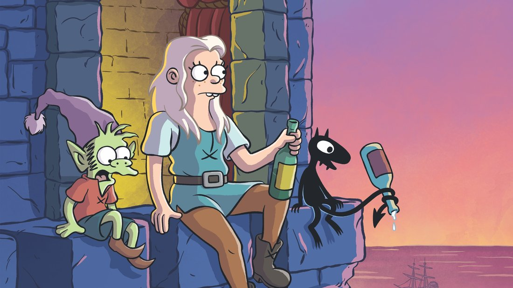

About Princess Bean
Princess Bean (Tiabeanie Mariabeanie de la Rochambeaux Grunkwitz) is 19-year-old princess of Dreamland and possible heir to the throne of Maru.
Princess Bean and her friends
Princess Bean's characteristics
- She's got fair hair
- She drinks a lot
- She's good fighter
Princess Bean's friends
Princess Bean has 3 best friends, Luci, Elfo and Bunty. Clink on the links below to read more about them: